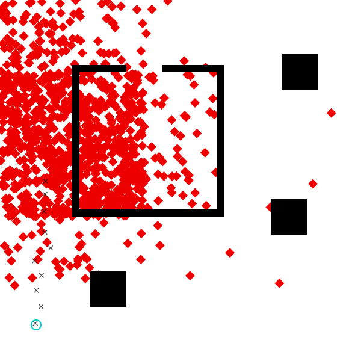

Tutorial: Data-Driven Proposals with PyTorch
This tutorial is a short extension to Data-Driven Proposals in Gen, which shows how to use PyTorch for easier specification of the proposal.
For this tutorial, you’ll need to ensure that you have PyCall installed, and pointing to a Python that has Torch installed.
using Gen, GenPyTorch, PyCall
We recreate the relevant parts of the model from the Data-Driven Proposals in Gen tutorial:
include("../../inverse-planning/geometric_primitives.jl");
include("../../inverse-planning/scene.jl");
include("../../inverse-planning/viz.jl")
include("../../inverse-planning/planning.jl");
scene = Scene(xmin=0, xmax=1, ymin=0, ymax=1)
add_obstacle!(scene, make_square(Point(0.30, 0.20), 0.1))
add_obstacle!(scene, make_square(Point(0.83, 0.80), 0.1))
add_obstacle!(scene, make_square(Point(0.80, 0.40), 0.1))
horizontal = false
vertical = true
wall_thickness = 0.02
add_obstacle!(scene, make_line(horizontal, Point(0.20, 0.40), 0.40, wall_thickness))
add_obstacle!(scene, make_line(vertical, Point(0.60, 0.40), 0.40, wall_thickness))
add_obstacle!(scene, make_line(horizontal, Point(0.60 - 0.15, 0.80), 0.15 + wall_thickness, wall_thickness))
add_obstacle!(scene, make_line(horizontal, Point(0.20, 0.80), 0.15, wall_thickness))
add_obstacle!(scene, make_line(vertical, Point(0.20, 0.40), 0.40, wall_thickness));
start = Point(0.1, 0.1)
dt = 0.1
num_ticks = 10
planner_params = PlannerParams(rrt_iters=600, rrt_dt=0.05,
refine_iters=3500, refine_std=1.);
@gen function agent_model(
scene::Scene, dt::Float64, num_ticks::Int,
planner_params::PlannerParams)
# sample the start point of the agent from the prior
start_x ~ uniform(0, 1)
start_y ~ uniform(0, 1)
start = Point(start_x, start_y)
# sample the destination point of the agent from the prior
dest_x ~ uniform(0, 1)
dest_y ~ uniform(0, 1)
dest = Point(dest_x, dest_y)
# plan a path that avoids obstacles in the scene
maybe_path = plan_path(start, dest, scene, planner_params)
planning_failed = maybe_path === nothing
# sample the speed from the prior
speed ~ uniform(0.3, 1)
if planning_failed
# path planning failed; assume agent stays at start location indefinitely
locations = fill(start, num_ticks)
else
# path planning succeeded; move along the path at constant speed
locations = walk_path(maybe_path, speed, dt, num_ticks)
end
# generate noisy measurements of the agent's location at each time point
noise = 0.01
for (i, point) in enumerate(locations)
x = {:meas => (i, :x)} ~ normal(point.x, noise)
y = {:meas => (i, :y)} ~ normal(point.y, noise)
end
return (planning_failed, maybe_path)
end;
measurements = [
Point(0.0980245, 0.104775),
Point(0.113734, 0.150773),
Point(0.100412, 0.195499),
Point(0.114794, 0.237386),
Point(0.0957668, 0.277711),
Point(0.140181, 0.31304),
Point(0.124384, 0.356242),
Point(0.122272, 0.414463),
Point(0.124597, 0.462056),
Point(0.126227, 0.498338)];
PyCall allows us to import Python libraries directly into our Julia code:
torch = pyimport("torch")
nn = torch.nn
F = nn.functional
PyObject <module 'torch.nn.functional' from '/Users/alexlew/gen-quickstart/tutorials/pytorch/venv/lib/python3.9/site-packages/torch/nn/functional.py'>
It also provides the @pydef macro, which we can use to define Python classes using Julia code.
In PyTorch, new neural network architectures are defined as subclasses
of the nn.Module class. We create our own neural network class here,
called NeuralProposal.
Every module needs to define two methods: __init__ and forward.
In __init__, we create any layers we will use later. The expression
nn.Linear(input_dim, output_dim) creates a fully-connected layer mapping
a given number of input dimensions to a given number of output dimensions.
Here, we construct three such layers: fc1 maps our four inputs to 50 hidden
units, fc2 transforms the 50 hidden units, and fc3 maps the 50 hidden
units to 5 output neurons, which will later be normalized into the 5
bin probabilities for dest_x or dest_y. (PyTorch also comes with helpers
for constructing more complex layers, including convolutional layers and RNN
cells, but we do not cover that here.)
The forward function actually implements the neural network’s computation,
making use of any layers created in __init__. Here, we use ReLU activation
functions, instead of the tanh-based activation used in the previous section.
@pydef mutable struct NeuralProposal <: nn.Module
function __init__(self, num_in)
# Note the use of pybuiltin(:super): built in Python functions
# like `super` or `str` or `slice` are all accessed using
# `pybuiltin`.
pybuiltin(:super)(NeuralProposal, self).__init__()
self.fc1 = nn.Linear(num_in, 50)
self.fc2 = nn.Linear(50, 50)
self.fc3 = nn.Linear(50, 5)
end
function forward(self, x)
x = F.relu(self.fc1(x))
x = F.relu(self.fc2(x))
x = self.fc3(x)
return x
end
end
PyObject <class 'NeuralProposal'>
Once we’ve defined a nn.Module, we can create a generative function out of it
using the TorchGenerativeFunction constructor. The first argument is an
instantiated Torch model, in our case, NeuralProposal(4). Here, 4 is the
value we are passing into NeuralProposal’s __init__ method, which expects
us to provide num_in, the number of input units. The second argument to
TorchGenerativeFunction is a list of TorchArg objects, describing the
arguments to the forward function. We have only one argument, x, so we pass
in a list of one element. A TorchArg object specifies the argument’s dtype
(torch.float in this case, for 32-bit floating-point numbers), and a Boolean
for whether gradients should flow through this argument (almost always true, unless
the argument is some discrete value, e.g., a Boolean flag). Finally, we pass in
the number of output tensors to expect from calling forward – in this case, just one.
x_nn = TorchGenerativeFunction(NeuralProposal(4), [TorchArg(true, torch.float)], 1);
x_nn can now be called on inputs:
x_nn([0.0, 0.0, 0.0, 0.0])
5-element Vector{Float64}:
-0.07767701894044876
0.006771232932806015
-0.06922771036624908
-0.11070195585489273
0.028574829921126366
To turn these into bin probabilities, we’ll use softmax:
softmax(logits) = exp.(logits .- logsumexp(logits))
softmax(x_nn([0.0, 0.0, 0.0, 0.0]))
5-element Vector{Float64}:
0.19319124522982853
0.21021458830983716
0.19483049317822299
0.18691531798546976
0.2148483552966415
Our proposal in this section will actually use two neural networks: after
generating a dest_x using the probabilities from x_nn, it will generate
a dest_y from a second network, y_nn. But y_nn will take an additional
argument: the sampled dest_x value. This way, in theory, the y neural network
can propose different dest_y values depending on the sampled x.
To this end, we create a y_nn that accepts 5 inputs, rather than 4. Note that
every time we call NeuralProposal(...), it is calling __init__ to generate a
fresh set of layers and their parameters; so the parameters are not shared between
x_nn and y_nn.
y_nn = TorchGenerativeFunction(NeuralProposal(5), [TorchArg(true, torch.float)], 1);
We are now ready to write our custom proposal, which calls each neural
network to generate probabilities, then samples using piecewise_uniform.
Note that because the neural networks are generative functions, we call them
using ~ — even though they make no random choices. This is important for
Gen’s gradient-based optimization features to work properly.
scale_coord(coord, min, max) = (coord / (max - min)) - 0.5
num_x_bins = 5
num_y_bins = 5;
@gen function custom_dest_proposal_torch(measurements::Vector{Point}, scene::Scene)
# scale inputs to be in the range [-0.5, 0.5]
x_first = scale_coord(measurements[1].x, scene.xmin, scene.xmax)
x_last = scale_coord(measurements[end].x, scene.xmin, scene.xmax)
y_first = scale_coord(measurements[1].y, scene.ymin, scene.ymax)
y_last = scale_coord(measurements[end].y, scene.ymin, scene.ymax)
# sample dest_x
x_bounds = collect(range(scene.xmin, stop=scene.xmax, length=num_x_bins+1))
x_probs ~ x_nn([x_first, y_first, x_last, y_last])
dest_x ~ piecewise_uniform(x_bounds, softmax(x_probs))
# sample dest_y
y_bounds = collect(range(scene.ymin, stop=scene.ymax, length=num_y_bins+1))
y_probs ~ y_nn([x_first, y_first, x_last, y_last, dest_x])
dest_y ~ piecewise_uniform(y_bounds, softmax(y_probs))
return nothing
end;
To train the proposal, we construct an update that applies a fixed step size gradient descent move. We indicate that we want the update to apply to all the trainable parameters of x_nn and all the trainable parameters of y_nn. Note that custom_dest_proposal_torch does not have any trainable parameters of its own, unlike custom_dest_proposal_neural.
update = Gen.ParamUpdate(Gen.ADAM(0.001, 0.9, 0.999, 1e-8),
x_nn => collect(get_params(x_nn)), y_nn => collect(get_params(y_nn)));
And run the training procedure. Here, we’ve used the more effective ADAM optimizer, so we can get by with less training. (But more training may still help, and you may decide to run it for more epochs or larger epochs! If you have a GPU available, GenPyTorch should automatically use it.)
function data_generator()
# since these names are used in the global scope, explicitly declare it
# local to avoid overwriting the global variable
local measurements
local choices
# obtain an execution of the model where planning succeeded
done = false
while !done
(choices, _, retval) = Gen.propose(agent_model, (scene, dt, num_ticks, planner_params))
(planning_failed, maybe_path) = retval
done = !planning_failed
end
# construct arguments to the proposal function being trained
measurements = [Point(choices[:meas => (i, :x)], choices[:meas => (i, :y)]) for i=1:num_ticks]
inputs = (measurements, scene)
# construct constraints for the proposal function being trained
constraints = Gen.choicemap()
constraints[:dest_x] = choices[:dest_x]
constraints[:dest_y] = choices[:dest_y]
return (inputs, constraints)
end;
Gen.train!(custom_dest_proposal_torch, data_generator, update,
num_epoch=10, epoch_size=100, num_minibatch=100, minibatch_size=100,
evaluation_size=10, verbose=true);
epoch 1: generating 100 training examples...
epoch 1: training using 100 minibatches of size 100...
epoch 1: evaluating on 10 examples...
epoch 1: est. objective value: 0.30674785750200567
epoch 2: generating 100 training examples...
epoch 2: training using 100 minibatches of size 100...
epoch 2: evaluating on 10 examples...
epoch 2: est. objective value: 0.057911306335681687
epoch 3: generating 100 training examples...
epoch 3: training using 100 minibatches of size 100...
epoch 3: evaluating on 10 examples...
epoch 3: est. objective value: 1.195958290383073
epoch 4: generating 100 training examples...
epoch 4: training using 100 minibatches of size 100...
epoch 4: evaluating on 10 examples...
epoch 4: est. objective value: 0.36682692005589856
epoch 5: generating 100 training examples...
epoch 5: training using 100 minibatches of size 100...
epoch 5: evaluating on 10 examples...
epoch 5: est. objective value: 0.8955448017601333
epoch 6: generating 100 training examples...
epoch 6: training using 100 minibatches of size 100...
epoch 6: evaluating on 10 examples...
epoch 6: est. objective value: 1.0538069887694372
epoch 7: generating 100 training examples...
epoch 7: training using 100 minibatches of size 100...
epoch 7: evaluating on 10 examples...
epoch 7: est. objective value: 0.9263616359863105
epoch 8: generating 100 training examples...
epoch 8: training using 100 minibatches of size 100...
epoch 8: evaluating on 10 examples...
epoch 8: est. objective value: 1.1320598453574786
epoch 9: generating 100 training examples...
epoch 9: training using 100 minibatches of size 100...
epoch 9: evaluating on 10 examples...
epoch 9: est. objective value: 0.3309016351778859
epoch 10: generating 100 training examples...
epoch 10: training using 100 minibatches of size 100...
epoch 10: evaluating on 10 examples...
epoch 10: est. objective value: 0.6199856166120441
We can visualize the proposal and see that although it’s not perfect, it correctly focuses on the upper left regions of the scene.
function visualize_custom_destination_proposal(measurements, start, dest_proposal; num_samples=100)
visualize() do
for i=1:num_samples
(proposed_choices, _) = Gen.propose(dest_proposal, (measurements, scene))
constraints = choicemap(proposed_choices)
constraints[:start_x] = start.x
constraints[:start_y] = start.y
(trace, _) = Gen.generate(agent_model, (scene, dt, num_ticks, planner_params), constraints)
draw_dest(scene, Point(trace[:dest_x], trace[:dest_y]))
end
draw_scene(scene)
draw_start(scene, start)
draw_measurements(scene, measurements)
end
end;
visualize_custom_destination_proposal(measurements, start, custom_dest_proposal_torch, num_samples=1000)

Exercise
Give brief answers for the following questions:
- Do you expect that the neural proposal trained above would work all right for observed agent locations different from the ones we’ve been working with in this notebook? Why or why not?
- Do you expect that the neural proposal trained above would work all right for scenes different from the one we’ve been working with in this notebook? Why or why not? (For example, would it do well in the
scene_2doorsscene from Problem 2.4? If so, can you imagine other scenes where it would fail?) - If you answered “no” to either of the above questions, can you describe (but not implement!) a modification to the neural network architecture, the training procedure, or both that would allow you to answer “yes”?
Exercise
The training procedure for the neural networks above was not vectorized across training examples. For fast training on a GPU it is important to vectorize the evaluation of gradients across multiple training examples. Write a vectorized version of the custom_dest_proposal_torch that takes a scene and a vector of data sets (measurement vectors), and samples a destination point for each of the input data sets. Train it and visualize the proposal distribution, and the results of importance resampling inference that using the proposal for some amount of computation, for our example data set.
Hint:
-
Construct a vectorized version of each of the neural networks that operate on an extra ‘training example’ dimension.
-
Construct a vectorized version of the proposal. It should accept a vector of measurement vectors as one of its arguments. This vectorized propsal should make 2N random choices where N is the batch size.
-
Construct a vectorized version of the data generator. It should generate constraints for all random choices of the vectorized proposal.
-
Construct a non-vectorized version of the proposal that invokes the vectorized neural networks on a single data set.